Decision Trees
Contents
1. Decision Trees#
In this chapter we will treat a non-parametric method, the Decision Tree (DT) that is one of the most popular ML algorithms. They are used usually as components of ensemble methods. They are non-parametric models because they don’t need a predetermined set of parameters before training can start as in parametric models - rather the tree fits the data very closely and often overfits using as many parameters are required during training.
Its popularity stems also from yet another attribute that is becoming very important in the application of ML/AI in mission critical industries such as health: its ability to offer interpretable predictions to some degree that can also be introspected easily by humans. DTs can be used for both regression and classification - here we look at a classification use case but the principles are the same.
For example, let’s say that you had a basket of fruit in front of you, and you were trying to teach someone who had never seen these types of fruit before how to tell them apart. How could you do it? The answer is shown pictorially below.
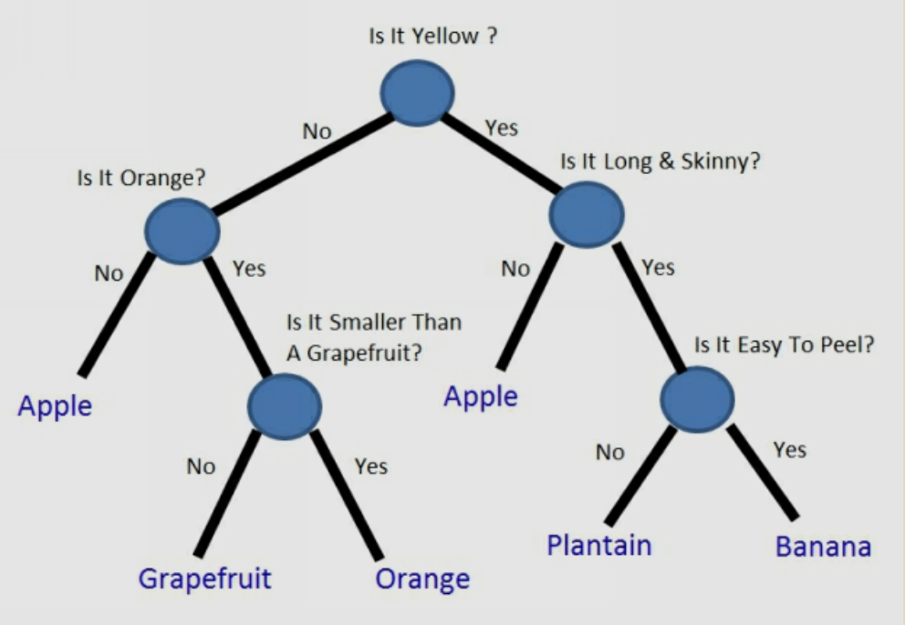
A decision tree is a tree where each node represents a feature(attribute), each link (branch) represents a decision (rule) and each leaf represents an outcome(categorical for classification or continual for regression).
If your decision tree is good, you can now pick up an unknown piece of fruit and follow the flow chart to classify it. If your decision tree is bad, you can go down the wrong path and put something in the wrong category. For instance, if you didn’t know yellow apples existed when you built your decision tree, you might have assumed that all yellow fruit are either bananas or plantains.
In what follows, we focus on a dataset with \(m=88\) and \(4\) labels: Apples, Oranges, Bananas, Grapefruit. Each example has multiple features \(n\): color, width and length.
Fruit |
Colors |
|---|---|
Apples |
Red, Green, or Yellow |
Oranges |
Orange |
Bananas |
Yellow or Green |
Grapefruit |
Orange or Yellow |
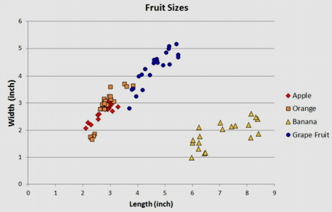
Fruits dataset
If we are to draw separation lines on feature space of length (\(x_1\)) and width (\(x_2\)) without using an ML algorithm but by hand, we probably would come up with the picture below.
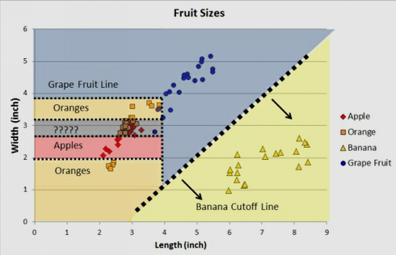 Draw by hand partition
Now, lets try to solve the same problem using an algorithm bearing in mind that many real-life data sets might have dozens or hundreds of different features.
1.1. CART algorithm#
One of the most popular algorithms that implement decision trees is the Classification and Regression Tree (CART) algorithm.
NOTE: scikit-learn uses an optimised version of the CART algorithm; however, scikit-learn implementation does not support categorical variables for now.
At its heart, the algorithm implements a recursive binary partitioning of the input feature space. The feature space in the example above is \(\mathbf{x} = (x_1, x_2, x_3)^T\) denoting length, width and color. Given a training dataset as usual \(D=\{(\mathbf x_i, y_i)\}\) for \(i=\{1, \dots m\}\), we need to come up with a close to optimal partitioning that minimizes the generalization (test) error.
We start at a root node that corresponds to the whole feature space (no partition) and design a test that is in its simplest form a conditional statement against a feature (a comparison if you like). Depending on the binary outcome of the test (either the input examples will satisfy the condition or not) we produce the corresponding child nodes each inheriting a subset of the input population and we repeat the exercise. The recursion stops when we reach the so called leaf nodes e.g. when the remaining examples in these nodes cannot be split further. We will come back at this terminal / leaf nodes later. An example tree and corresponding partition is shown in the two figures below.
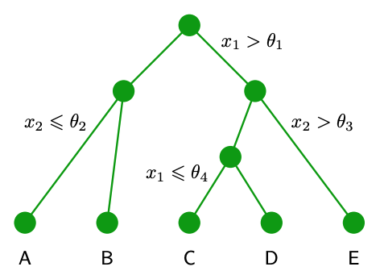
Example tree - \(x_1\) and \(x_2\) based splits shown.
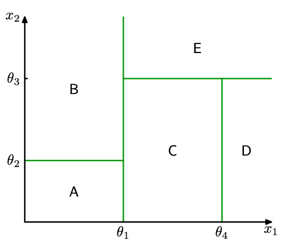
Partition for the example tree above.
The test specification consists of the variables \(\theta_i\) that are are also called thresholds as well as the specific feature \(x_k\) that is being selected for the test.
Lets see the three recursions of the algorithm as shown below.
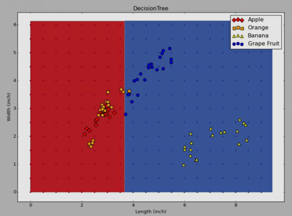
First split

Second split
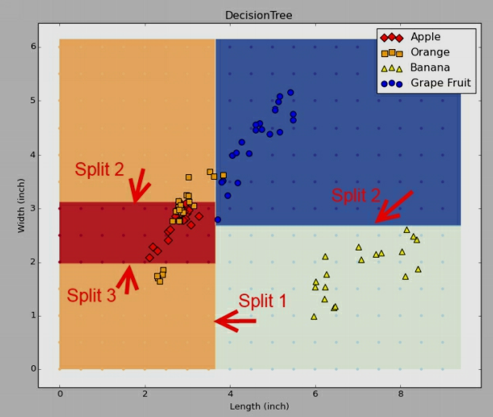
Third split
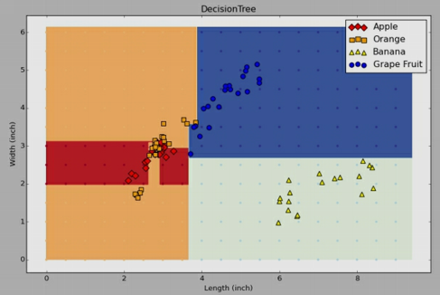 Final decision tree for the fruit classification problem
This brings up the question of how we select the test spec parameters \(x_k\) and \(\theta_k\) to minimize a certain metric that is dependent on the type of the problem we deal with - classification or regression.
1.2. Selecting the feature \(x_k\) to split#
To gauge which feature we will choose split requires a review of certain probabilistic concepts namely the concept of entropy. We can develop on top of entropy the concept of information gain that is pictorially explained using the example shown below
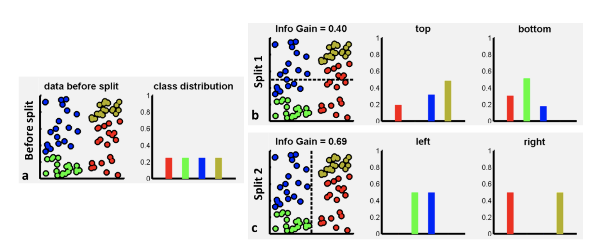 Information gain for two possible splits
The input dataset in this example has uniform distribution over classes - we have exactly the same number of points in each class. If we split the data horizontally (select feature \(x_1\)) this produces two sets of data. Each set is associated with a lower entropy (higher information, peakier class histograms) that is defined as usual
The entropy drops after any reasonable split as we exclude labels from the original set and end up with more homogenous sets of labels. The gain of information achieved by splitting the data into two parts (1 / 2 or left / right) is computed as
where \(|.|\) is the cardinality operator i.e. the number of elements in the corresponding set and \(L\) is the loss function that the algorithm is searching for its minima by trying \((x_k, \theta_k)\) pairs. Apart from entropy we can also use another measure of impurity of the labels of the corresponding set - the Gini impurity measure that is also the default setting in scikit learn. Try to focus on understanding the entropy based measure as it is used in other algorithms that we cover and is completely analogous to Gini.
More often that not, the tree may grow to a point that we have overfitting. In DT implementations there are many hyperparameters that can control overfitting the DT to the data. Regularization therefore happens by (a) constraining the maximum growing depth, (b) limiting the splits to only the cases that we have a appreciable number of data points to split, © putting a cap in the number of leaf nodes (d) putting a cap in the number of data points per leaf node.
1.3. Inference#
Training will result into the heuristically optimal decision tree. Inference is then straightforward as the input data will transverse the tree and find itself into a leaf node. We can also estimate the probability that an instance belongs to a particular class k or \(p(c_k|\mathbf x)\). First it traverses the tree to find the leaf node for this instance, and then it returns the ratio of training instances of class k in this node. Therefore DTs can give us some form of confidence to the classification operation they do.
1.4. Example#
A DT applied in the area of cybersecurity.
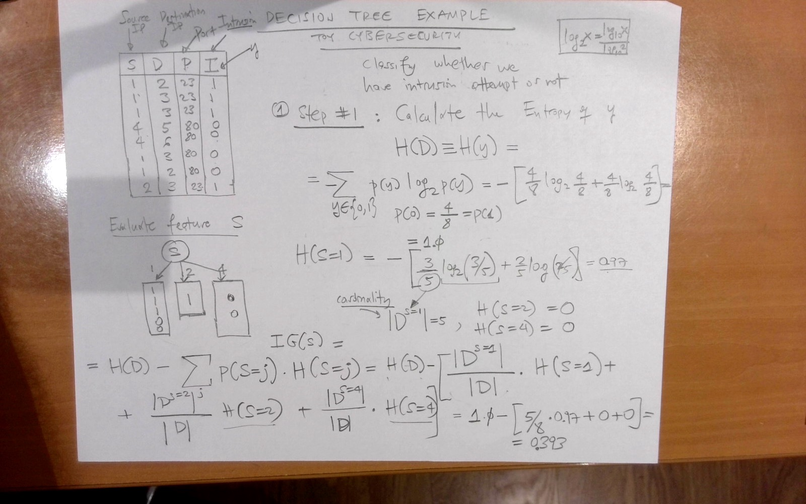
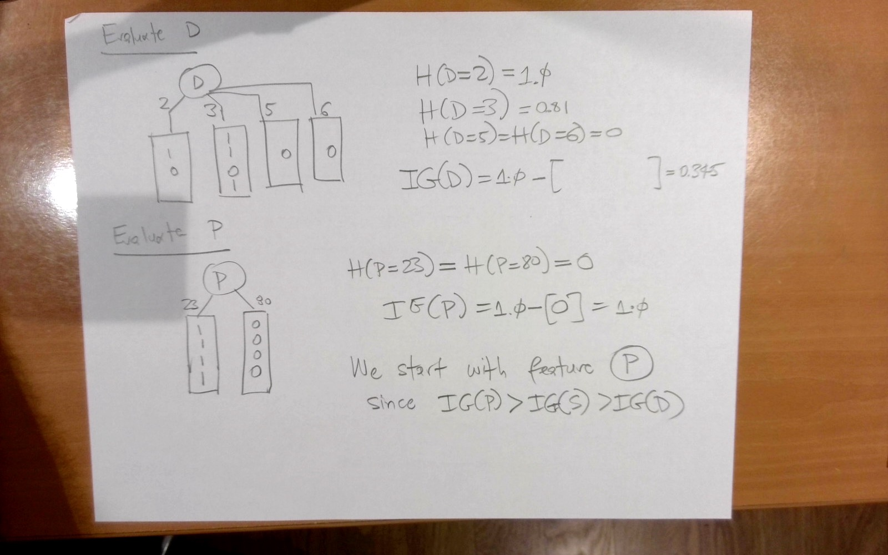
1.5. References#
Some of the material used in this chapter is from (a) “ML with Random Forests and Decision Trees” by Scott Hartshorn, (b) Decision Forests for Classification, Regression, Density Estimation, Manifold Learning and Semi-Supervised Learning by Criminisi et.a.l.